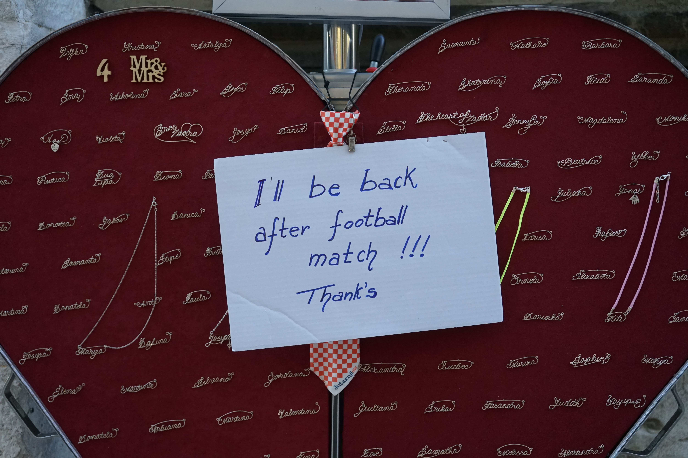

This football fan could have simply closed their heart-shaped box and go watch the match so that no one steals anything. But by only leaving a note, they voluntarily picked up a vulnerability of potential theft, giving up partial control/ownership to passers-by. Here, weakness and loss of control might be the subtle way that the box owner employed to express trust and connection. They were also too proud of the match to not publically announce it :)